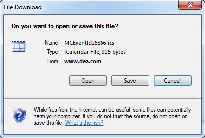

1. Click an event title from the Manage Events page, or click the Edit icon on the Event Details page. The Event Summary page opens.
2. Click Download .ics file. A Download File dialog box opens.
Download File dialog box

3. Indicate in this dialog box whether you want to open or save the file.
• If you chose to open the downloaded file, after all the data is downloaded, the file opens automatically in the Calendar view of your personal email program.
• If you chose to save the downloaded file, after all the data is downloaded, you are prompted to save the file with the default name of MCEventId<#>.ics (for example, MCEventId20287.ics) to your desktop. You can save the file to a location of your choice, and then after you open the file, the event opens in the Calendar view of your personal email program.
4. Do one of the following:
• If you accessed the Event Summary page from the Manage Events page, click Back to Manage Events to return to the Manage Events page.
• If you accessed the Event Summary page from a calendar, click Back to Calendar to return to the event’s calendar.
Page tags: article:topic